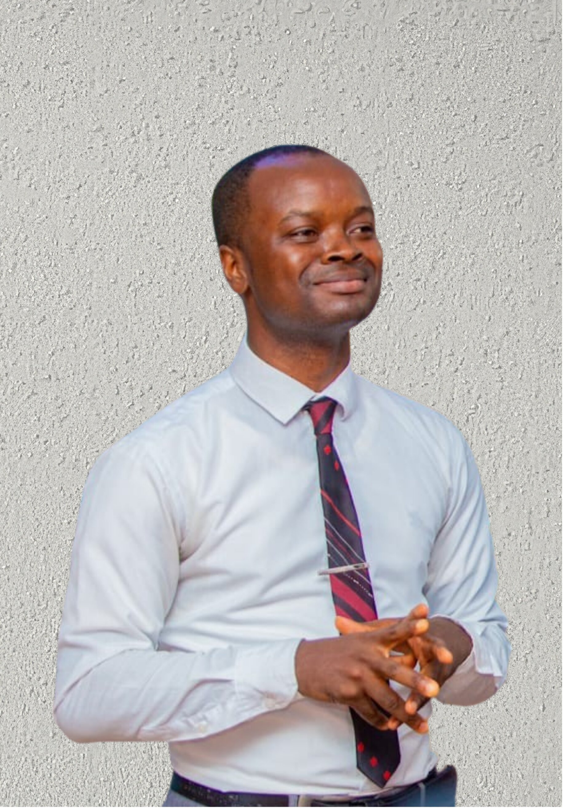

Transformational leader, public speaker, and learning and development specialist passionate about developing people, strengthening learning systems, and helping individuals translate their potential into meaningful impact.
Explore My Work
My mission is to strengthen people and systems through education, leadership development, and workforce innovation.
Empowering people to lead themselves, teams and institutions effectively.
Designing programs that deliver measurable outcomes in employability and leadership.
Building systems that respond to the evolving future of work.
Partnering with governments, private sector and communities.
Seven-day immersive leadership experience preparing participants for the future of work.
Leadership summit for student leaders focused on character and responsibility.
Four-week intensive program helping professionals navigate career transitions.
"I participated in the Future Impact Conference organized by Mr Taiwo. His teachings became my compass as I navigated my Master's and PhD programs in the UK."
— Emmanuel O, UK